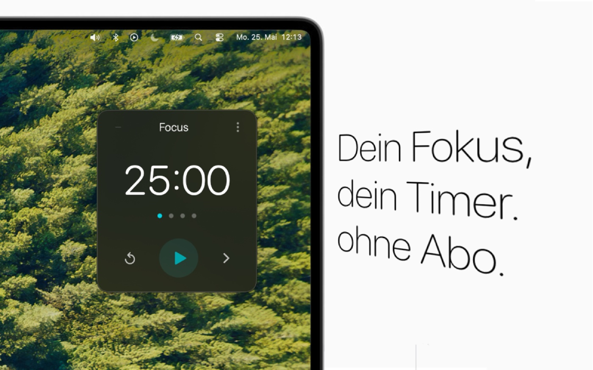
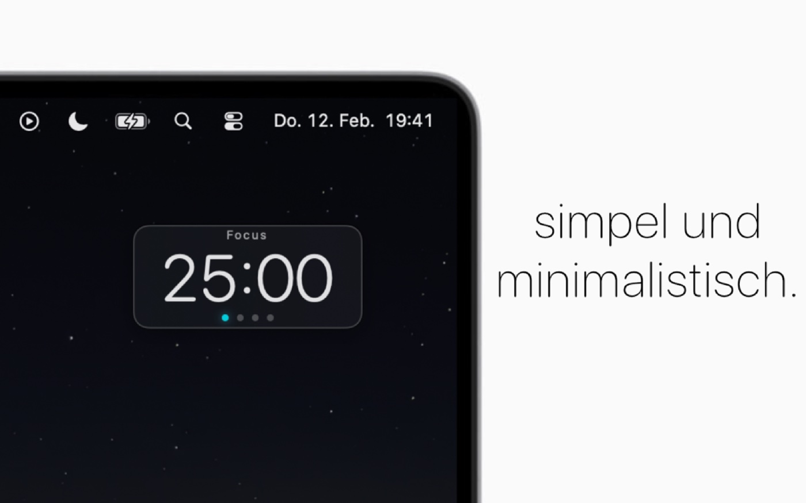

Ein Pomodoro-Timer, der über allen Fenstern schwebt und sich klein macht, wenn man arbeitet. Randlos, ohne Titelleiste, mit Live-Timer in der Menüleiste. Fünfundzwanzig Minuten Fokus, fünf Minuten Pause, nach vier Zyklen eine lange. Oder Stoppuhr, wenn der Tag keine Struktur verträgt.
Das Fenster hat keine Titelleiste und rastet an Bildschirmkanten ein. Der Wechsel zwischen den Größen ist animiert.


Bleibt über allen Apps, ohne Titelleiste, mit Kantenrasterung.
Statusitem mit laufender Zeit und einem Menü für Start, Pause, Überspringen.
Fokus, kurze Pause, lange Pause nach einstellbar vielen Zyklen, Autoplay wahlweise.
Stoppuhr statt Countdown, wenn der Rahmen nicht passt.
Fokuszeit pro Tag, gruppiert nach Woche, Monat, Jahr. Gespeichert lokal, kein Konto.
Ein Klang am Phasenende, Lautstärke einstellbar.
Einmaliger Kauf, kein Abo. Schaltet unbegrenztes Überspringen und beliebig oft fünf Minuten dazu frei.
Vollständig lokalisiert, Rechts-nach-links inklusive.
Einstellungen und Statistik liegen in den UserDefaults auf dem Mac. Es gibt keinen Server.
Der Timer ist ein einzelnes ViewModel, das Ticks, Phasenübergänge und Zyklen hält und seine Einstellungen selbst sichert. Das Fenster ist SwiftUI, aber die Dinge, die SwiftUI auf dem Mac nicht kann, macht AppKit: die randlose, schwebende Fensterklasse, das Einrasten an Kanten, das Statusitem in der Menüleiste mit seinem Menü.
Premium hat genau eine Wahrheitsquelle, den StoreManager. Jede Stelle, die etwas freischaltet, fragt dort nach, nirgendwo sonst.